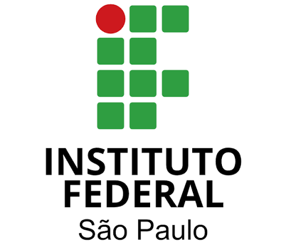

Linguagem simples, sempre
Nada de termo técnico sem tradução. Usamos exemplos do dia a dia, letra ampliada, imagens e repetição dos pontos importantes — e nunca tratamos quem caiu num golpe como culpado.

Conexão CidadãSegurança e Inclusão DigitalSobre nós
Somos um grupo de estudantes do curso superior de Análise e Desenvolvimento de Sistemas do Instituto Federal de Educação, Ciência e Tecnologia de São Paulo — Campus Catanduva. Atuamos sob a orientação do Prof. Dr. Kleber Sartorio, na disciplina de Introdução à Extensão, unindo nossa formação tecnológica ao compromisso com a responsabilidade social e o fortalecimento da cidadania.

De onde vem
O Conexão Cidadã, Segurança e Inclusão Digital nasce da observação de uma necessidade concreta em Monte Alto (SP): pessoas de baixa renda e beneficiárias de programas sociais usam celulares, aplicativos de mensagens e serviços digitais sem orientação suficiente sobre proteção de dados e reconhecimento de fraudes.
O projeto começou olhando para as pessoas idosas, e elas continuam no centro das ações. Ao conversar com a rede socioassistencial, porém, percebemos que a mesma vulnerabilidade atinge um grupo maior — e que golpes com benefícios sociais pesam ainda mais em quem depende deles para o mês inteiro. Ampliamos o escopo por isso.
Como enfrentamos
Aplicamos o que aprendemos no curso — segurança da informação, experiência do usuário, organização de dados e prototipação de recursos digitais — na criação de iniciativas pedagógicas e acessíveis, em duas frentes de atendimento.
No que acreditamos
Nada de termo técnico sem tradução. Usamos exemplos do dia a dia, letra ampliada, imagens e repetição dos pontos importantes — e nunca tratamos quem caiu num golpe como culpado.
O conteúdo é pesquisado, revisado pela equipe e pelo professor orientador antes de ir a público. Explicação simples não significa explicação frouxa.
Todos os exemplos são simulados. Em nenhuma atividade pedimos senha, código de verificação, número de cartão, dado bancário, número de benefício ou documento. Se alguém pedir isso em nosso nome, é golpe.
A equipe
Cada integrante assumiu uma frente do projeto, da pesquisa dos golpes à conversa com as instituições da cidade.
Líder
Atuo no ramo de análise de dados voltados à manutenção industrial. Construí minha base analítica e técnica em uma formação em Administração de Empresas e três anos no sistema SENAI, com gestão de estoque, usinagem de peças e eletricidade industrial. Assumo a liderança deste projeto movido pelo desafio de democratizar o acesso à tecnologia.
Sub-líder
Sou formada em Desenvolvimento de Sistemas pela ETEC Elias Nechar. Atualmente atuo como auxiliar administrativa na Secretaria de Assistência Social de Tabapuã, usando organização e conhecimento técnico para otimizar rotinas administrativas e apoiar o atendimento à comunidade.
Coordenador geral
Desde criança eu gostava de entender como os jogos e os sites funcionavam, e quis aprender a fazer esses sistemas. Também sou fascinado por design gráfico e trabalho com edição de vídeo e social media. Neste projeto cuido de cada detalhe e da ordem para cumprirmos as metas, e toco a área criativa, desenvolvendo o site e os panfletos de divulgação junto com o Otávio.
Documentarista
Meu nome é Miguel Mapelli Ramalho. Nasci em Novo Horizonte, São Paulo, e tenho 21 anos. Em 2023 concluí o ensino técnico em Análise e Desenvolvimento de Sistemas na ETEC de Novo Horizonte, e hoje continuo a formação no IFSP Campus Catanduva. No projeto atuo como documentarista, responsável por organizar listas de presença, questionários, atas, materiais produzidos, registros fotográficos autorizados e as demais evidências das atividades.
Parcerias e divulgação
Sou estudante do 4º semestre de ADS no IFSP Campus Catanduva. Escolhi a área pelo interesse em tecnologia e em como ela pode facilitar a vida das pessoas. O tema dos golpes digitais me chamou atenção por ser um problema cada vez mais comum, e eu já tinha experiência ajudando uma pessoa com mais de 60 anos com conteúdos digitais. Espero aprimorar minha comunicação com diferentes públicos.
Pesquisador
Meu nome é Otávio dos Santos Carvalho, tenho 20 anos e sou da turma de 2025 do curso de ADS no IFSP Campus Catanduva, no quarto período. Escolhi o curso porque tenho afinidade com tecnologia desde pequeno. O que mais me interessou no tema é o quanto ele impacta a vida das pessoas: nenhuma educação é desnecessária, e este projeto é uma ótima oportunidade de aprender também.
Soluções digitais
Sou estudante do 4º semestre de ADS no IFSP Catanduva. Escolhi a área pelo desejo de criar ferramentas tecnológicas que resolvam problemas do dia a dia. No projeto sou responsável por apresentações, recursos interativos, QR Codes e materiais com linguagem simples e acessível. Acredito que a tecnologia deve incluir e proteger todas as gerações, servindo como uma ponte e não como um obstáculo.
Professor orientador
Orienta o projeto na disciplina de Introdução à Extensão, acompanha a metodologia e revisa todos os conteúdos antes das atividades com a comunidade.
É isso que buscamos: que a comunidade de Monte Alto navegue pelo ambiente digital com segurança, autonomia e tranquilidade. Se você quer levar as atividades ao seu grupo, fale com a gente.
Falar com a equipe